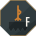

Design language
A hall of gold on dark fields: warm metal accents on near-black stone.
Vǫluspá 37 places a hall of gold of Sindri's line on Niðavellir, the “dark fields”, and the language takes its name from them. Geometry comes first and ornament after: every part must be complete and legible with every ornament deleted, corners are cut and never rounded, and every motif has a primary source.
The design language is the full specification; this page shows it.
The name
- Old Norse
- Skíðblaðnir
- Brodeur, 1916
- Skídbladnir
- Everyday
- skid
In the Prose Edda it is Freyr's ship, made by dwarves, the sons of Ívaldi: big enough for all the gods, and folded into a pouch when it is not at sea. Arthur Gilchrist Brodeur's 1916 translation spells it Skídbladnir, writing d for ð (Gylfaginning XLIII, page 56; text). The project's epigraph is his.
Palette
Near-black stone carries everything; gold and gem color are rationed the way a hoard is. Elevation is a tonal step, never a shadow.
Stone
- Ink
#0C0D0FBackground; the terminal's ground - DeepSurface
#15171ACards at rest, dialogs, sheets - RaisedSurface
#202329Raised elements, the ground of chips - ForgeGlow
#28231AThe forge sheet and seal, the only firelit surfaces
Text and accents
Contrast is the WCAG 2.1 ratio against Ink.
- Bone
#F3F0E8Primary text · 17.07 - Muted
#AAA69DSecondary text · 8.01 - Gold
#D6A85FPrimary accent, cursor, selected and armed states · 8.91 - Bronze
#CD7F32Warm material accent · 6.18 - Ember
#E46C55Error, destructive · 6.09 - Moss
#76B082Ready, healthy · 7.69 - Frost
#78A9C6Working, informational · 7.67
Gem fills
Fill only, never text: a dark stone in a bright metal cell, as garnet sits in cloisonné. Contrast is Bone on the fill.
- Garnet
#830E0DAlmandine cloisonné red · 9.07 - Hematite
#6D2114Iron-ore red-brown · 9.82 - BlueGlass
#26619CSutton Hoo boar-tusk glass · 5.64
Cut corners
Corners are cut, not rounded, and every cut is 45°. A card may carry one hairline of Gold at 25% along its top edge, light catching the carved lip, and nothing else.
- Card10 dp on every corner
- Chip4 dp, for chips and keys
- Sheet12 dp, top corners only
- Cleft14 dp top-start, 4 dp elsewhere: destructive commit only
- Octagon29% of the side: portrait frames
Marks and ornament

Seals
Dwarves built the ship, and in skid dwarves crew it. On the phone each session is a dwarf, with a name and a seal from a catalogue of 101 drawn from Norse myth, Tolkien and Wagner.
A seal is a pure function of the dwarf's catalogue key. The key's SHA-256 picks a mineral field, a bind-rune of two or three Younger Futhark runes on one shared stave, the beard's teeth and depth, which octagon edges are gilded, and Gold or Bronze for the metal.
- Móðsognir
norse.modsognirVǫluspá st. 10 - Nóri
norse.noriVǫluspá st. 11 - Þekkr
norse.thekkrVǫluspá st. 12 
Fílinorse.filiVǫluspá st. 13- Gimli
tolkien.gimliThe Lord of the Rings, Appendix A.III - Alberich of Nibelheim
germanic-operatic.alberichDas Rheingold, Scene 3
Type
SKÍÐBLAÐNIR
Big Shoulders
Display: the wordmark and titles. A condensed industrial gothic, set in caps at weight 650; its flat terminals read as stamped metal.
Copyright 2019 The Big Shoulders Project Authors. SIL Open Font License 1.1.
ready · 0123456789 · Þþ Ðð Ǫǫ
JetBrains Mono
Data: every machine fact, the voice of the terminal itself, and never prose.
Copyright 2020 The JetBrains Mono Project Authors. SIL Open Font License 1.1.
Running text, labels and buttons take the system face, Roboto on Android, which costs nothing to load.
Every face carries ð and þ. This site serves subsets of the app's own font files.
Provenance
Every motif has a primary-source anchor. A motif without provenance does not ship.
- Gold-on-dark groundVǫluspá 37, Sindri's hall on Niðavellir (literal text)The palette's thesis
- Gold-and-garnet cloisonnéSutton Hoo shoulder-clasps (British Museum); the Staffordshire HoardGem fills; the gold-line-on-dark card
- Angular key and fretPictish stones, Class II–III edges (overview); Greek-key corner methods (Edkins)The repeating border family
- Chevron bandingArt Deco and sharp geometry in film-dwarven design (Culture on Call); the chevron is this language's reading of itThe simplest member of the fret family; dividers
- Faceted planar surfacesIron Hills armor, planar like a cut gemstone (Nick Keller)The cut-corner shape grammar
- Tricursal valknutTängelgårda and Stora Hammars I stones, beside Odin figures (Valknut)The Hlíðskjálf mark
- Ship under one square sailGotland picture stones such as Tjängvide I, from Alskog parish (Gotlands Museum catalogue); the sail sewn from unbroken vertical lengths of cloth (Viking Ship Museum, Roskilde)The ship mark: hull, mast, yard and the sail's three gores
- Shield row along the gunwaleGokstad ship, built c. 890 and buried c. 900: 32 round shields to each side, painted alternately yellow and black (Museum of the Viking Age, archived page; current page)The ship mark's Garnet row, as lozenges in one fill
- Ship vaneSöderala vane, gilt bronze, c. 1050, probably worn on a ship before its reuse as a church weathervane (Söderala vane)The vane at the ship mark's masthead
- Bind-runes on a shared staveRunestone and coin monograms (Bind rune)The seal's maker's mark
- Younger FutharkViking-age script, c. 800–1100, Unicode U+16A0–16FF (Runic block)The only runes, and only as ornament
- DiminuendoInsular initial-to-text size decay, Kells and Lindisfarne (Nordenfalk 1947)The typographic hierarchy
The forbidden list includes rounded corners, drop shadows, decorative gradients, pure black, beast-headed chrome, Elder Futhark, runes as text, blackletter, Tolkien's scripts, or horned helmets, axes, horns and hammers.
The ledger gives each ruling its reason; the history gives the project's decisions.